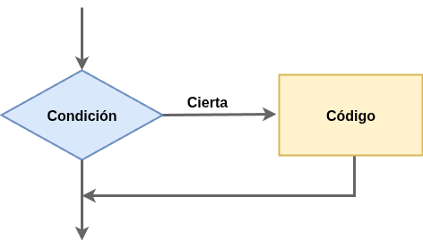
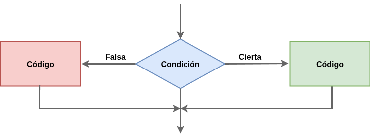
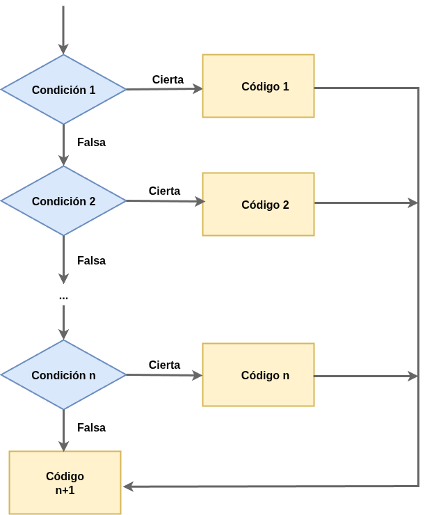
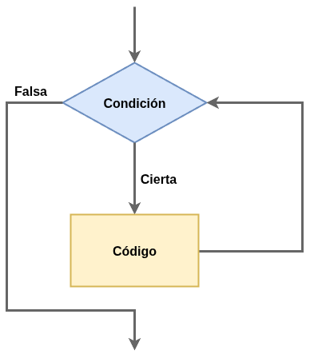
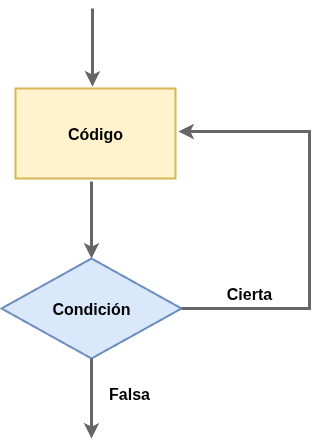
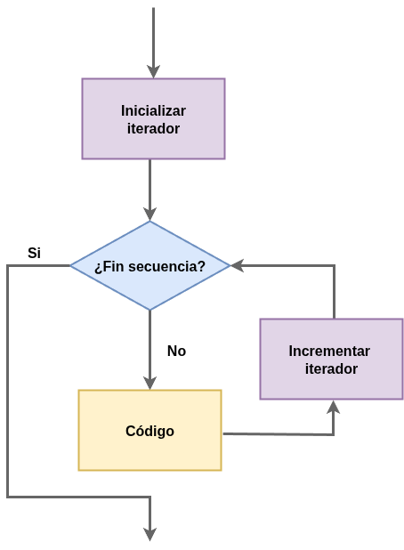

Estructuras de Control en PHP
Las estructuras de control son componentes fundamentales en cualquier lenguaje de programación, incluido PHP. Permiten que el flujo de ejecución de un script no sea simplemente lineal, sino que pueda tomar decisiones (condiciones) o repetir bloques de código (bucles) en función de ciertas circunstancias. Dominarlas es crucial para construir aplicaciones dinámicas y lógicas.
PHP ofrece diversas estructuras de control que se clasifican principalmente en condicionales y repetitivas (bucles).
Estructuras Condicionales
Las estructuras condicionales permiten ejecutar un bloque de código solo si una condición específica es verdadera.
El condicional if
La estructura condicional más simple en Java es la instrucción if, que permite evaluar una condición y, si esta es verdadera (true), ejecutar una sentencia o un bloque de sentencias. En caso de que la condición sea falsa (false), ese bloque de código se salta y el programa continúa con la siguiente instrucción. Es una forma muy directa de tomar decisiones en el flujo del programa.

La sentencia que sigue al if puede ser una única línea de código o bien un conjunto de instrucciones agrupadas dentro de un bloque, el cual se delimita usando llaves {}. Es importante entender que si solo se desea ejecutar una única instrucción, las llaves son opcionales. Esto significa que podemos escribir el if seguido directamente de esa línea de código sin necesidad de usar {}.
La sentencia if-else
La sentencia if-else es una extensión de la estructura if, y permite que el programa tome una de dos decisiones posibles, según si se cumple o no una determinada condición.

Cuando usamos un if por sí solo, el bloque de código que contiene solo se ejecuta si la condición se cumple. Pero si agregamos un bloque else, podemos definir qué hacer en caso contrario, es decir, cuando la condición no se cumple.
En este caso, el programa primero evalúa la condición dentro del if. Si esa condición resulta true, se ejecutan las instrucciones del bloque if (es decir, las que están entre llaves después de if).
Si en cambio la condición resulta false, entonces se salta el bloque if y se ejecuta el bloque que sigue al else.
Esto es útil cuando hay dos caminos posibles y se debe elegir uno u otro, pero nunca ambos. Un ejemplo muy clásico es cuando queremos comprobar si una persona es mayor o menor de edad, si una contraseña es correcta o incorrecta, o si un número es positivo o negativo.
El bloque else no lleva condición propia: simplemente se ejecuta si la condición del if no se cumple. Es decir, siempre se ejecutará uno de los dos bloques, pero nunca los dos al mismo tiempo.
Esta estructura hace que el programa pueda tomar decisiones más completas y claras, ya que no solo actúa cuando se cumple una condición, sino que también define un comportamiento alternativo para cuando no se cumple.
La sentencia elseif
La sentencia elseif se utiliza cuando queremos evaluar múltiples condiciones, una tras otra. Es parte de las estructuras condicionales de PHP, y nos permite ejecutar diferentes bloques de código según cuál condición sea verdadera.
Es útil cuando hay más de dos caminos posibles y no queremos escribir muchos if separados.
<?php
$nota = 75;
if ($nota >= 90) {
echo "Sobresaliente.";
} elseif ($nota >= 70) {
echo "Notable.";
} elseif ($nota >= 50) {
echo "Aprobado.";
} else {
echo "Reprobado.";
}
?>
Operadores lógicos
Los operadores lógicos son herramientas fundamentales en Php (y en cualquier lenguaje de programación) que se utilizan para combinar condiciones y tomar decisiones más complejas dentro de una estructura condicional. En lugar de evaluar una sola condición, muchas veces necesitamos comprobar varias cosas al mismo tiempo, y para eso usamos estos operadores.
Los tres operadores lógicos principales en Php son: && (AND lógico), || (OR lógico) y ! (NOT lógico). A continuación vamos a ver con más detalle estos operadores.
Operador lógico && (and)
El operador && se usa cuando queremos que dos condiciones se cumplan al mismo tiempo; solo devolverá true si ambas condiciones son verdaderas. Por ejemplo, podríamos querer que un usuario pueda acceder solo si su edad es mayor de 18 y su cuenta está activa.
Veamos el comportamiento de este operador en una tabla de verdad:
| A | B | A && B |
|---|---|---|
| ✅ true | ✅ true | 🟢 true |
| ✅ true | ❌ false | 🔴 false |
| ❌ false | ✅ true | 🔴 false |
| ❌ false | ❌ false | 🔴 false |
Como ya hemos comentado, el operador && solo devuelve true cuando ambas condiciones son verdaderas. Si una sola es falsa, el resultado completo es falso.
En el siguiente ejemplo se utilizan dos expresiones relacionales que devuelven valores lógicos: a > b y b < 0. Como ambas están entre paréntesis, se evaluarán primero, y luego sus valores se combinarán utilizando el operador lógico && (AND lógico).
La expresión a > b se evalúa como true, ya que la variable a tiene valor 5 y la variable b tiene valor -1, por lo tanto se cumple que 5 > -1.
Por otro lado, la condición b < 0 también se evalúa como true, ya que el valor de b es -1, y se cumple que -1 < 0.
Dado que ambas condiciones son verdaderas, la expresión completa (a > b) && (b < 0) se transforma en true && true, lo que da como resultado true. Es decir, las dos condiciones deben cumplirse para que el operador && devuelva un valor verdadero.
Ahora veamos un segundo ejemplo donde la primera condición es falsa:
La condición a == 0 se evalúa como false, ya que a tiene el valor 5, y claramente 5 no es igual a 0.
En cambio, la segunda condición b == -1 se evalúa como true, ya que b sí tiene el valor -1, por lo que -1 == -1 es cierto.
Al evaluar la expresión completa (a == 0) && (b == -1), el resultado será false && true, lo cual da como resultado false, ya que ambas condiciones deben ser verdaderas para que el operador && retorne true.
Además, en este caso ocurre lo que se llama un cortocircuito lógico. Como la primera condición (a == 0) ya resulta false, Php ni siquiera evalúa la segunda parte, porque el resultado total del && ya está definido como false. Este comportamiento mejora el rendimiento del programa y evita evaluaciones innecesarias.
El operador lógico || (or)
El operador || se utiliza cuando basta con que una de las condiciones se cumpla; es decir, devuelve true si al menos una de las condiciones es verdadera. Esto es útil, por ejemplo, cuando se quiere permitir el acceso si el usuario es administrador o si tiene una invitación válida.
La tabla de verdad de este operador es la siguiente:
| A | B | A || B |
|---|---|---|
| ✅ true | ✅ true | 🟢 true |
| ✅ true | ❌ false | 🟢 true |
| ❌ false | ✅ true | 🟢 true |
| ❌ false | ❌ false | 🔴 false |
El operador || devuelve true si al menos una de las condiciones es verdadera. Solo da false si las dos son falsas.
En este ejemplo se evalúa una expresión lógica que utiliza el operador || (OR lógico). Este operador devuelve true cuando al menos una de las condiciones es verdadera. Vamos a ver cómo se comporta en este caso.
La primera condición b < 0 se evalúa como true, ya que la variable b tiene el valor -1, y se cumple que -1 < 0.
La segunda condición a < b se evalúa como false, ya que a tiene valor 5 y b tiene valor -1, por lo tanto 5 < -1 no se cumple.
Al evaluar la expresión completa (b < 0) || (a < b), obtenemos true || false. El resultado es true, ya que con el operador || basta con que una sola condición sea verdadera para que toda la expresión sea verdadera.
En este caso, como la primera condición ya es verdadera, se produce lo que se conoce como cortocircuito lógico: Php no evalúa la segunda condición, porque el resultado completo ya está determinado como true. Esto es eficiente y evita realizar evaluaciones innecesarias.
Veamos ahora otro ejemplo, en el que ambas condiciones se evalúan como false.
La primera condición a == 0 es false, ya que a tiene valor 5, y 5 no es igual a 0.
La segunda condición b == a también es false, ya que b tiene valor -1 y a tiene valor 5, por lo tanto -1 no es igual a 5.
Cuando se evalúa la expresión (a == 0) || (b == a), obtenemos false || false, lo que da como resultado false, ya que ninguna de las condiciones se cumple. En este caso, no se activa el cortocircuito, porque Java debe evaluar ambas condiciones para confirmar que ninguna es verdadera.
Este ejemplo muestra claramente cómo el operador || se comporta cuando no hay ningún operando verdadero: devuelve false, y se procesan todas las partes de la condición.
El operador lógico ! (not)
Finalmente, el operador ! invierte el valor de una condición; si la condición era true, pasa a ser false, y viceversa. Se usa para decir “si no ocurre tal cosa”, lo cual es muy útil para comprobar negaciones o restricciones.
| A | !A |
|---|---|
| ✅ true | 🔴 false |
| ❌ false | 🟢 true |
El operador ! invierte el valor lógico. Si la condición es true, al aplicar ! se vuelve false, y viceversa.
Veamos ahora un par de ejemplos. En el primer ejemplo, se aplica el operador de negación sobre una expresión relacional que devuelve true:
La expresión a == 9 evalúa si la variable a (que tiene el valor 9) es igual a 9. Como esto es cierto, el resultado de la condición es true.
Al aplicar el operador de negación sobre esa expresión (!(a == 9)), lo que se obtiene es !true, lo cual se traduce en false. Es decir, la negación invierte el resultado de la condición original.
En el segundo ejemplo, el operador se aplica sobre una expresión que originalmente devuelve false:
La condición a > b evalúa si la variable a (con valor -1) es mayor que b (con valor 0). Como -1 no es mayor que 0, la condición es false.
Cuando se aplica la negación, se evalúa !(a > b), lo cual se transforma en !false, y eso da como resultado true. De esta forma, la negación convierte una condición falsa en verdadera.
Estos ejemplos muestran cómo el operador ! permite cambiar el sentido lógico de una expresión, y es especialmente útil en condiciones donde queremos comprobar que algo no ocurra.
Switch
La estructura switch en Php es una forma alternativa al uso de múltiples sentencias if-else if. Se utiliza cuando se quiere comparar una misma variable o expresión contra varios valores posibles. Es especialmente útil cuando hay muchas alternativas diferentes y todas dependen del mismo valor.

La sintaxis del switch permite evaluar una variable (por ejemplo, un número o una cadena) y ejecutar un bloque de código diferente dependiendo del caso que coincida con ese valor. A cada uno de esos posibles valores se le llama case.
<?php
$dia = date('N'); // 1 (Lunes) a 7 (Domingo) según ISO-8601
switch ($dia) {
case 1:
echo "Lunes";
break;
case 2:
echo "Martes";
break;
case 3:
echo "Miércoles";
break;
case 4:
echo "Jueves";
break;
case 5:
echo "Viernes";
break;
case 6:
echo "Sábado";
break;
case 7:
echo "Domingo";
break;
}
?>
// Switch con int como condicion
Integer dia = Calendar.getInstance().get(Calendar.DAY_OF_WEEK);
switch (dia) {
case 1:
System.out.println("Domingo");
break;
case 2:
System.out.println("Lunes");
break;
case 3:
System.out.println("Martes");
break;
case 4:
System.out.println("Miercoles");
break;
case 5:
System.out.println("Jueves");
break;
case 6:
System.out.println("Viernes");
break;
case 7:
System.out.println("Sabado");
break;
}
En este ejemplo, la variable que se evalúa se coloca después de la palabra switch. Luego, por cada posible valor que queremos comprobar, escribimos una sentencia case. Si el valor de la variable coincide con uno de los case, se ejecutan las instrucciones asociadas a ese bloque.
Muy importante: en Php, si no usamos la palabra break después de cada bloque de instrucciones, el programa continuará ejecutando los siguientes casos, aunque ya haya encontrado una coincidencia. Esto se llama fall through y a veces se usa intencionadamente, pero en la mayoría de los casos se desea evitar, por lo que el uso de break es fundamental.
También es posible incluir una cláusula default, que se ejecutará si ninguno de los case coincide con el valor de la variable. Es como el else en una estructura if-else.
<?php
$tipoVehiculo = "coche";
switch ($tipoVehiculo) {
case "coche":
echo "Puedes pasar de 00:00 a 08:00";
break;
case "camion":
echo "Puedes pasar de 08:00 a 16:00";
break;
case "moto":
echo "Puedes pasar de 16:00 a 24:00";
break;
default:
echo "No se puede pasar con un " . $tipoVehiculo;
break;
}
?>
// Switch con String como condicion
String tipoVehiculo = "coche";
switch (tipoVehiculo) {
case "coche":
System.out.println("Puedes pasar de 00:00 a 08:00");
break;
case "camion":
System.out.println("Puedes pasar de 08:00 a 16:00");
break;
case "moto":
System.out.println("Puedes pasar de 16:00 a 24:00");
break;
default:
System.out.println("No se puede pasar con un " + tipoVehiculo);
break;
}
Ejecución de varios bloques
Si queremos que varios casos ejecuten la misma lógica, no es necesario repetir esa lógica en cada uno de ellos. En lugar de eso, podemos agrupar los casos y eliminar los break intermedios para que se ejecute la misma acción para todos esos casos.
Por ejemplo, para realizar una acción para los días laborables y otra distinta para los festivos, podemos hacerlo así:
En este ejemplo, si el valor de dia es, por ejemplo, 3 (martes), el programa entrará en el case 3, seguirá ejecutando el código en los casos 4, 5 y 6 hasta llegar a la instrucción break, que detendrá la ejecución del switch. Por eso, al entrar en el case 3, se imprimirá "Día laboral".
Esto sucede porque cuando se entra en un switch, el código se ejecuta desde el caso coincidente hasta que encuentra un break o termina el bloque switch. Esta característica, llamada fall through, puede aprovecharse para casos en los que los casos no ejecutan lógica excluyente, sino que añaden funcionalidad acumulativa.
Un ejemplo simple que usa esta propiedad para calcular el número de días restantes hasta el fin de semana partiendo del mismo ejemplo anterior sería:
<?php
$dia = 2; // Cambia este valor para probar distintos días (1 = Domingo, 7 = Sábado)
$diasHastaFinSemana = 0;
switch ($dia) {
case 2:
$diasHastaFinSemana++;
case 3:
$diasHastaFinSemana++;
case 4:
$diasHastaFinSemana++;
case 5:
$diasHastaFinSemana++;
case 6:
echo "Día laboral: Días restantes hasta el fin de semana: $diasHastaFinSemana";
break;
case 1:
case 7:
echo "Fin de semana";
break;
default:
echo "La semana solo tiene 7 días";
break;
}
?>
int diasHastaFinSemana = 0;
switch (dia) {
case 2:
diasHastaFinSemana++;
case 3:
diasHastaFinSemana++;
case 4:
diasHastaFinSemana++;
case 5:
diasHastaFinSemana++;
case 6:
System.out.println("Dia laboral: Dias restantes hasta el fin de semana: " + diasHastaFinSemana);
break;
case 1:
case 7:
System.out.println("Fin de semana");
break;
default:
System.out.println("La semana solo tiene 7 dias");
break;
}
En este código, dependiendo del valor de dia, se van sumando los días restantes hasta el fin de semana incrementando la variable diasHastaFinSemana. Cuando se llega a un break, se imprime el resultado y se termina el switch.
Bucles
Cuando escribimos programas, a menudo necesitamos repetir una misma acción varias veces. Imagínate estas situaciones reales:
- Quieres felicitar a 5 personas en su cumpleaños: dirías "¡Felicidades!" cinco veces.
- Estás sumando los precios de los productos de una lista de compras.
- Quieres contar desde el 1 hasta el 10.
En todos estos casos estás haciendo la misma acción repetidamente. Aquí es donde los bucles (también llamados ciclos o estructuras de repetición) entran en juego. Son herramientas que nos permiten decirle al programa:
"Haz esto una y otra vez mientras se cumpla cierta condición."
Sin los bucles, tendríamos que escribir el mismo código una y otra vez, lo cual no es práctico, ni eficiente. Gracias a ellos, podemos escribir instrucciones que se repitan tantas veces como sea necesario, ya sea:
- Un número determinado de veces.
- Mientras algo siga siendo verdadero.
- Hasta que ocurra cierta situación.
Piensa en un bucle como un atajo para no repetir código. En lugar de escribir 10 veces la misma instrucción, usamos un bucle que la repita por nosotros.
A lo largo de los próximos apartados veremos los distintos tipos de bucles que existen en Php, cómo funcionan y en qué situaciones conviene utilizar cada uno.
Bucle while
El bucle while permite repetir instrucciones mientras se cumpla una determinada condición. Es especialmente útil cuando no sabemos cuántas veces será necesario repetir una tarea hasta alcanzar el resultado deseado.

Un ejemplo de uso típico puede ser la selección aleatoria sin repetición, donde seguimos intentando obtener un valor nuevo hasta que demos con uno que no hayamos usado antes. Este tipo de situaciones no tienen un número fijo de repeticiones, y por eso el while es una herramienta ideal.
<?php
function leerNumero() {
$numero = -1;
while ($numero <= 0) {
echo "Introduce un número positivo: ";
$entrada = trim(fgets(STDIN)); // Lee desde consola y elimina espacios
if (is_numeric($entrada)) {
$numero = (int) $entrada;
} else {
echo "Eso no es un número válido.\n";
}
}
return $numero;
}
// Llamamos a la función y mostramos el resultado
$numeroIngresado = leerNumero();
echo "Número ingresado: $numeroIngresado\n";
?>
Bucle do-while
El bucle do-while es una estructura de control controlada por condición final, lo que significa que primero se ejecuta el cuerpo del bucle y luego se evalúa la condición. Gracias a esta característica, el bucle se ejecuta al menos una vez, independientemente de si la condición es verdadera o no en el primer momento.

Bucle for
El bucle for es una estructura de control cíclica también conocida como bucle controlado por contador. Es ideal cuando sabemos exactamente cuántas veces se debe repetir una acción.
Aunque en español podríamos traducir for como “para”, en la práctica tiene más sentido interpretarlo como “desde”, ya que describe bien su comportamiento: ejecutar una serie de acciones desde un valor inicial hasta un valor final de una variable de control.

Este tipo de bucle es muy común en programación, y permite ejecutar un bloque de instrucciones un número definido de veces, utilizando para ello una variable de control (o contador) que se incrementa o decrementa de forma sistemática.
Cuando trabajamos con bucles en PHP como for, while o do...while, es muy común usar una variable de control que se actualiza en cada iteración. Para que el bucle funcione correctamente, usamos operadores de actualización (como ++ o +=) y operadores de condición (como < o >=) que determinan cuándo termina el ciclo.
En la siguiente tabla se resumen los operadores más usados en PHP para este propósito:
| Movimiento de la variable de control | Operadores de la actualización | Operadores de la condición |
|---|---|---|
| Incremento | ++, +=, *= |
<, <= |
| Decremento | --, -=, /= |
>, >= |
Visto lo sencillo del ejemplo anterior vamos a ver lo sencillo que es recorrer una colección de objetos si usamos el otro modelo de bucle for.
En este caso lo que estamos recorriendo es un array que también se podría recorrer de forma sencilla con la otra forma de bucle for aunque como podrás ver nos obliga a escribir algo más de código, por lo que para recorrer cualquier tipo de colección normalmente usaremos la opción anterior.